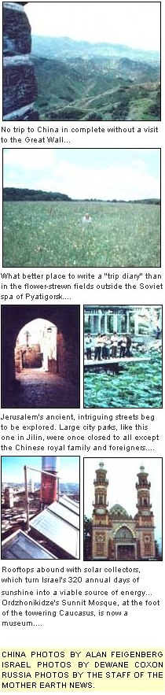

For practical knowledge and far-flung adventures, you can't beat...
Not long ago, a member of the Citizen Exchange Corps (a people-to-people organization that cosponsors MOTHER's U.S.S.R. trips) attended a Soviet social function and was told by an Intourist official that Aeroflot, Russia's national airline, was boosting its fares by 15%. "I thought inflation was only for decadent, capitalist societies," the CEC representative teased.
Unfortunately, no area of the world seems immune to today's rising costs. (The People's Republic of China recently announced a 75% increase in its intracountry transportation rates!) And, as you're probably aware, airfares are spiraling rapidly. Pretty soon, if present trends continue, an overseas trip may simply be out of reach for the average American.
Happily, that's not quite the case yet ... so now's a good time to fulfill your yen to visit faraway lands, before current travel costs start to took like "the good ol' days". And when it comes to satisfying wanderlust, you just can't beat the three exciting foreign expeditions that MOTHER can offer you in 1980.
We know for a fact that you won't find a more-for-your-money trip than the 10-day "Solar Tour of Israel" (February 14-24), which we're cosponsoring with solar-pioneering Jordan College and Solar Age (the official publication of the American section of the International Solar Energy Society). For the incredibly low price of $1,090, you get your roundtrip airfare from New York to Israel ... first-class hotels in Jerusalem, Tel Aviv, Haifa, and Tiberias on the Sea of Galilee ... all ground transportation ... breakfasts ... and guided tours throughout your stay in Israel.
Aside from letting you flee the snows of winter and enjoy the sun-splashed shores of the Mediterranean, our tour will give you a chance to explore bazaars, modem Israeli culture, and ancient historical sites. But-even more important- you'll also get a chance to investigate the many ways this ebullient nation (which is an international leader in practical solar technology) has learned to utilize its annual 320 days of sunshine.
You can, according to your interests, study how electricity is generated by means of solar ponds ... the wide application of sun power to heating and cooling both residential and commercial buildings ... the important role solar energy education plays in universities and institutes ... the nighttime use of photovoltaics ... the extraction of potash from the Dead Sea ... and much more.
You'll also get to meet some of Israel's top alternative energy scientists ... including Dr. Harry Tabor, Dr. David Wolf,.Dr. Harry Hodes, and Dr. Joost Manassen. We'll be bringing solar experts with us, too. President DeWayne Coxon of Jordan College (who's a pioneer in solar energy education) and Gordon Vander Till, director of Jordan's energy programs, will be two of our knowledgeable group leaders.
So, if you'd like to work on your winter tan-and also see what other wonderful things sunshine can accomplish-call our Tour Director, Sara Pacher, at 704/ 693-0211 for a last-minute reservation. But don't wait, because we need your payment right away in order to hold I 'your place in the sun".
If you just can't get ready for a tour fast enough to join the trip to Israel, you've got a bit more time to consider MOTHER's next bargain: the "Herbs and Wild Plants of the U.S.S.R." tour (from May 18 through June 8). The journey will begin with a cram course in culture (works of art, grand palaces, music, and dance) in the "living museum" that is the city of Leningrad. Then-to start our search for some of the hundreds of unique herbs and wild plants that flourish in this part of the world-we'll head south to ever-blooming, semitropical Abkhasia on the Black Sea ... a healthful region famous for its botanical wonders and long-living inhabitants.
Next, we'll travel to the flower-strewn Caucasian foothills and the charming health spa of Pyatigorsk, which features 30 different hot and cold medicinal springs. If the weather permits, we'll also take a side trip to Mt. Elbrus, which -at 18,481 feet-is the highest mountain in Europe. In addition, we'll brave an ancient, high mountain pass -right through the heart of the Caucasus-on our way to Tbilisi, a city renowned for its champagne, wines, and friendly people.
Then we'll head east-almost to the China border-to the apple-tree-filled streets of Alma-Ata (a name that means "Father of Apples"), which is situated in a valley and surrounded on three sides by the majestic, perpetually snow-covered peaks of the Tien Shan mountains. You can expect the greenery to be in full bloom when we arrive, making the whole city look like one tremendous park. Though few Western visitors ever penetrate so far into this gigantic nation, those who do experience one of the Soviet Union's most picturesque areas.
After exploring the wild fruit trees that blanket the surrounding mountain slopes and visiting Issyk-Kul (where ordinary plants grow into giants), we'll fly north to Irkutsk and the crystal-clear waters of beautiful Lake Baikal ... the largest freshwater lake in the world. Abundant wild foods grow in the forests here, and Robin Woods-this past season's leader of MOTHER's Wild Foods and Foraging Seminar-will be along to help us identify them.
Then, as a topper, we'll end up in Moscow for a quick look at the exciting heart of the Soviet Union-which should be all decked out in its pre-Olympic finery-before we board a train for Helsinki, Finland to catch our flight home.
This incredible journey is all yours for $2,390, including round-trip airfare from New York ... and a $100 deposit (refundable up to six weeks before departure) will hold your place.
MOTHER's next excursion, a "Food Production Tour of the People's Republic of China", will give you an opportunity to investigate the methods by which this mysterious country is now able to feed one-fourth of the world's population. And, since our visit will take us- right at harvest time -into the nation's prime agricultural regions, it will turn out to be a "culinary tour" as well.
For example, in Peking (where we'll take in such "tourist" sights as the Great Wall, the Ming Tombs, the Summer Palace, etc.) you'll get a chance to taste the classical Mandarin cuisine. Later, as we move south, we'll dine on the hot and spicy "peasant" cooking found in Szechwan. Then, before we finish our 21-day tour (17 days of which will be spent in China itself), we'll visit Kwangchow.. . . famous for its marvelously textured Cantonese food.
This tour, sponsored in cooperation with the China Travel Center, will leave from the West Coast on September 9, and -after traveling to the cities we've mentioned and more-we'll exit through Hong Kong, where you'll have two days to explore some of the fabulous restaurants in that enchanting city.
On September 29, you can fly directly home or-if you have the time-you can extend your stay in Hong Kong or exercise your option to stop off in Manila or Seoul, Tokyo, Hawaii, and the West Coast at no extra airfare charge.
This tour is priced at $1,950 for land costs, a price which is all-inclusive in China, and covers accommodations and breakfasts in Hong Kong as well. Add to that your airfare which, at current rates, is $1,166. To guarantee a place on this truly unique expedition, send a $200 deposit ($50 of which is nonrefundable).
The object of all of Mother's Tours is to offer you the kinds of trips to special places that you couldn't easily put together on your own. And, while travel is usually educational, we think our "tours-that-teach" will provide not only a chance to share-with other MOTHER readers-the excitement and adventure of foreign lands, but some solid and practical knowledge that will enrich your life for years to come, too!
So ... sign up now or write to Mother's Tours, P.O. Box 70, Hendersonville, North Carolina 28739 for our brochures.
We hope to meet and travel with you!
|
 |
|
|